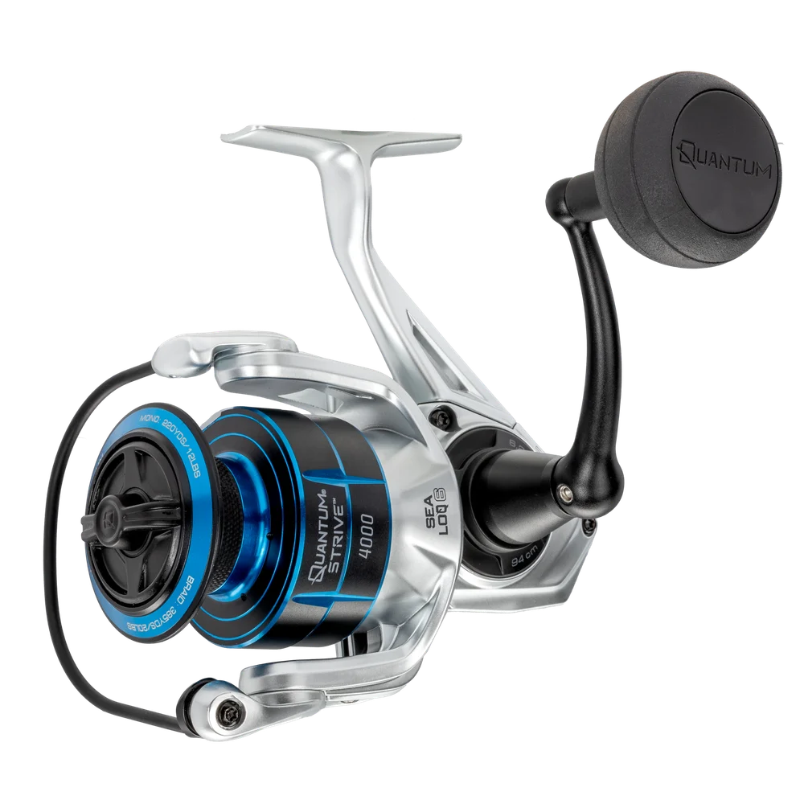

ReelCalc Reel Setup Guide
Quantum Strive 4000 Line Capacity & Reel Setup Guide
Built around a 4000-size frame, the Quantum Strive 4000 (SV4000.B2) is best matched to sealed spinning, inshore, saltwater, surf, and freshwater. 13.1 oz, 37 inches of line pickup per handle turn, and 25 lb of published maximum drag define the working scale of this exact model. At 13.1 oz, this size balances repeated casting with the line reserve expected for light saltwater and inshore work.